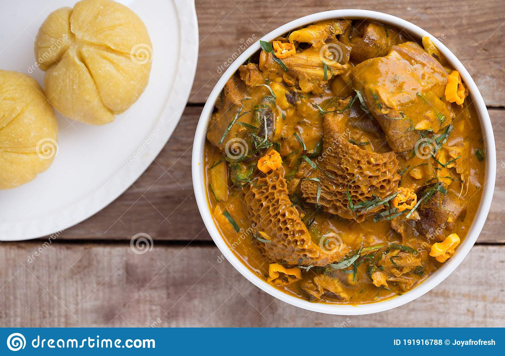

Pepper Soup recipe

a Pepper Soup dish
pepper soup is one of nigerians favorite meal
Ingredients
- small chicken
- cold water
- ground crayfish
- table salt
- cayenne pepper
- boiled yam and plantain
- lemongrass leaves
- red palm oil
- lime leaves
Recipe Steps
-
For the Spice Mix: In a small stainless-steel or cast iron skillet,
combine urheri, erhe, gbafilo, umilo, alligator pepper, and uziza.
Over medium-low heat, toast spices, stirring and swirling frequently, until fragrant, about 5 minutes.
Let cool to room temperature, about 10 minutes.
Transfer spices to a spice grinder and grind until a crumbly, coarse powder forms, 2 to 3 minutes.
Empty into a small bowl; set aside.
-
For the Pepper Soup: In a large stockpot, combine chicken, water, ground crayfish, salt, cayenne pepper,
half of the lemongrass, and prepared spice mix. Bring to a boil over high heat,
then reduce heat to maintain a simmer. Simmer until chicken is cooked through and tender,
but not falling off the bone, about 45 minutes (the time may vary depending on how the meat was cut).
-
Add lime leaves and remaining lemongrass. Season with salt and cayenne pepper to taste.
Let stand to allow flavors to develop, about 10 minutes.
-
To serve, divide chicken between warmed soup bowls.
Ladle broth on top, garnish with scent leaf, and serve with or alongside boiled yams, plantains,
white sweet potatoes, or rice, and a small bowl of palm oil for dipping.